基本資訊
航班
| 航班 | 路線 | 出發 | 抵達 | 飛行 |
|---|---|---|---|---|
| JX 870（星宇） | TPE → OKA | 12:00 (UTC+8) | 14:40 (UTC+9) | 1h40m |
| JX 871（星宇） | OKA → TPE | 15:50 (UTC+9) | 16:25 (UTC+8) | 1h35m |
沖繩時區：JST (UTC+9)，比台灣快1小時
住宿
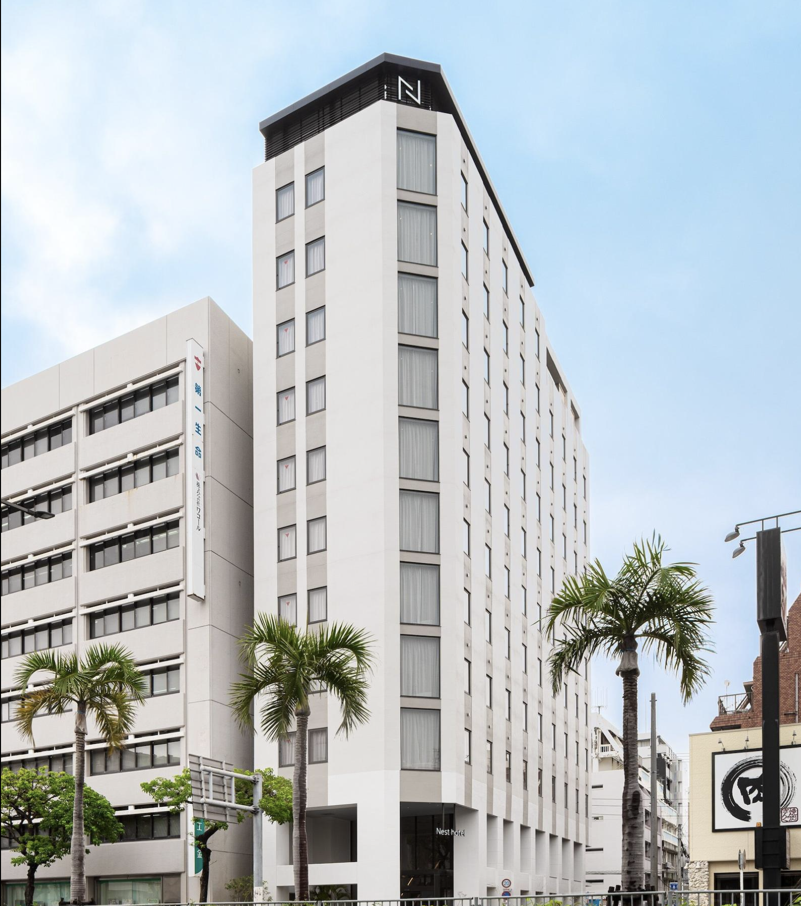

| 飯店 | 日期 | 費用 | 地圖 |
|---|---|---|---|
| Nest Hotel Naha Kumoji | 7/18-21（3晚） | TWD 33,730 | 📍 |
| Hotel Monterey Okinawa Spa & Resort | 7/21-25（4晚） | TWD 97,988 | 📍 |
租車
| 租車公司 | Toyota Rent a Car |
| 預約號碼 | 99959653700 |
| 取車店鋪 | 那霸機場（國際線）店 |
| 地址 | 那霸市赤嶺2丁目15-11 |
| 電話 | 098-857-0100 |
| 取車 | 7/18 15:30 (JST) |
| 還車 | 7/25 12:00 (JST) |
| 車型 | W2（7-8人座 Noah/Voxy） |
| 方案 | 完整套餐（含免責補償） |
| 地圖 | 📍 Google Maps |
取車攜帶：台灣駕照正本＋日文譯本＋護照
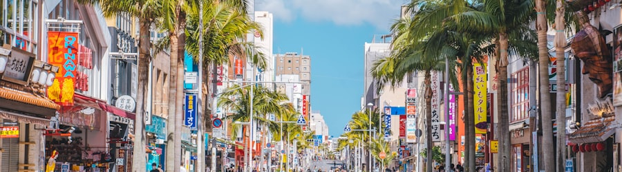
Day 1（7/18 週六）抵達那霸
住：Nest Hotel Naha Kumoji
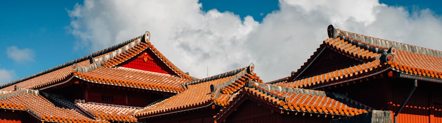
Day 2（7/19 週日）首里城＋南部
住：Nest Hotel Naha Kumoji
- 10:00首里城公園（園區寬敞可推車）大人¥400 / 6歲以下免費車11分📍
- 12:00午餐：ちょーでーぐぁ（高評價沖繩麵）車12分📍
- 13:00沖繩世界文化王國（鐘乳石洞、王國村、小動物）大人¥2,000 / 4-14歲¥1,000 / 3歲以下免費車21分📍
- 15:30iias沖繩豐崎＋Little Universe（彈跳床、充氣設施、微縮模型）大人~¥2,800 / 4-12歲~¥1,500 / 3歲以下免費車21分📍
- 17:30晚餐：iias美食街📍
- 18:30回飯店車16分
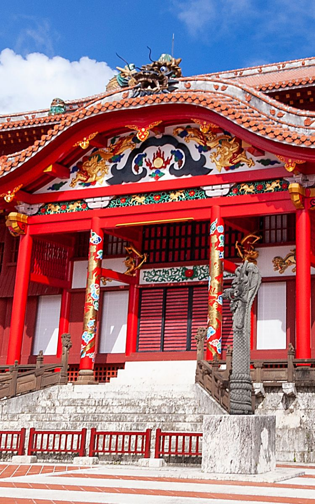
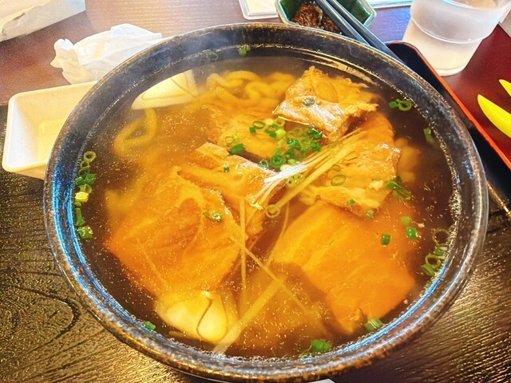
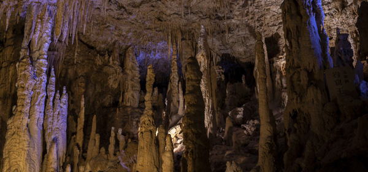
路線：那霸→首里→西原→南部→豐崎→那霸（順時針）｜ 行車：~81分
備案：通堂拉麵（回程順路）
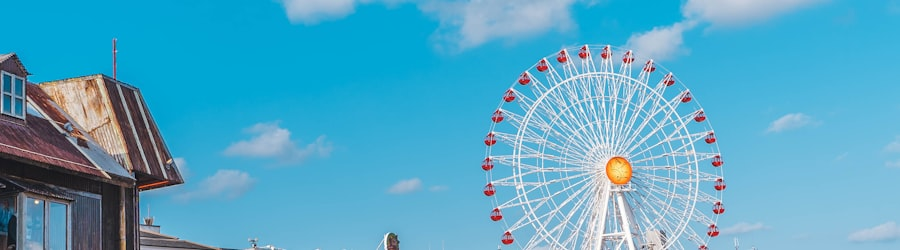
Day 3（7/20 週一）兒童王國＋美國村
住：Nest Hotel Naha Kumoji
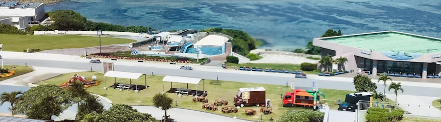
Day 4（7/21 週二）移動日・港川＋恩納度假
住：Hotel Monterey Okinawa Spa & Resort
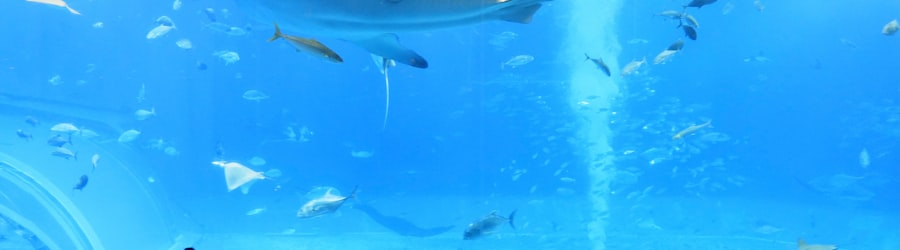
Day 5（7/22 週三）美麗海水族館＋古宇利島
住：Hotel Monterey Okinawa Spa & Resort
- 10:00出發往北（車上補眠）車81分
- 11:25美麗海水族館（黑潮之海、觸摸池、海龜館）大人¥2,180 / 6歲以下免費📍
- 13:30海豚表演（免費）步行5分📍
- 14:00午餐：Cafe Ocean Blue（面對大水槽邊吃邊看）📍
- 14:30古宇利島（大橋絕景＋海灘＋Heart Rock）免費車43分📍
- 16:00古宇利海洋塔（展望塔＋貝殼博物館＋自動駕駛車）大人¥1,000 / 4歲以下免費車5分📍
- 17:00晚餐：錦屋（海鮮丼＋沖繩料理，古宇利大橋旁）車3分📍
- 18:30回恩納車70分
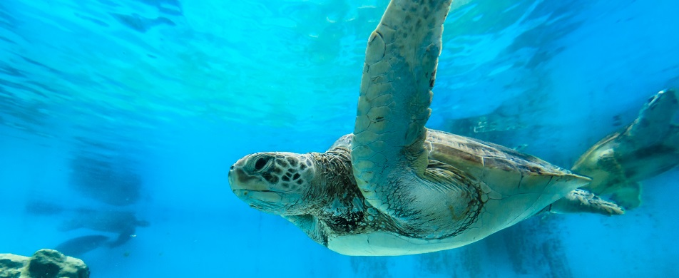
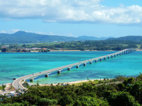
路線：恩納→水族館→古宇利→錦屋→恩納（ㄇ字型）｜ 行車：~194分
備案：まーさっさー（阿古豬涮涮鍋＋壽司，古宇利島內）
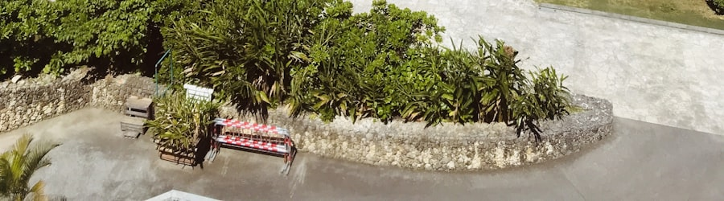
Day 6（7/23 週四）海中公園＋琉球妖怪
住：Hotel Monterey Okinawa Spa & Resort
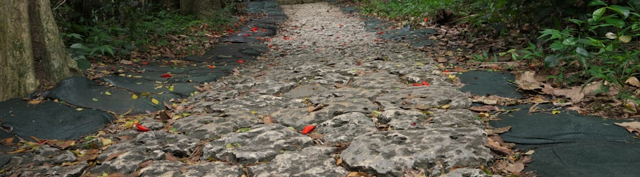
Day 7（7/24 週五）DINO恐竜PARK＋鳳梨公園
住：Hotel Monterey Okinawa Spa & Resort
- 10:00出發往名護（車上補眠）車58分
- 11:00DINO恐竜PARK（亞熱帶森林＋80隻等身大恐龍）大人¥1,000 / 4-15歲¥600 / 3歲以下免費📍
- 12:00名護鳳梨公園（自動駕駛車遊園＋試吃鳳梨甜點）大人¥850 / 未就學免費車2分📍
- 13:30園內午餐（鳳梨料理）📍
- 14:00回恩納（車上補眠）車60分
- 15:00飯店泳池＋海灘（最後一個下午）📍
- 18:30晚餐：浜の家（在地海鮮，CP值高）車6分📍
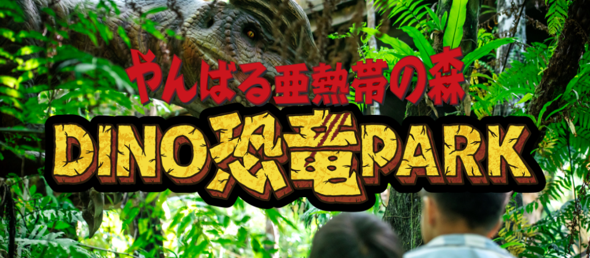
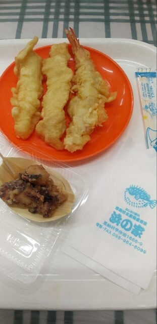
路線：恩納→名護（DINO＋鳳梨公園）→恩納 ｜ 行車：~120分
備案：ぎゅうとん合戦（車6分）
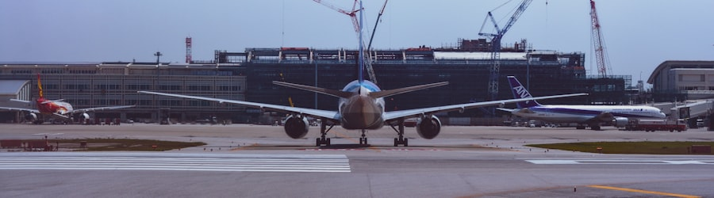
Day 8（7/25 週六）還車＋機場購物
⚠️ 還車期限12:00
每日行車時間
| 日期 | 行車 | 路線 |
|---|---|---|
| Day 1（7/18） | ~24分 | 租車店→DMM→飯店 |
| Day 2（7/19） | ~81分 | 那霸→首里→西原→南部→豐崎→那霸 |
| Day 3（7/20） | ~73分 | 那霸→沖繩市→AEON→北谷→那霸 |
| Day 4（7/21） | ~50分 | 那霸→港川→恩納 |
| Day 5（7/22） | ~194分 | 恩納→水族館→古宇利→錦屋→恩納 |
| Day 6（7/23） | ~76分 | 恩納→部瀨名→むら咲むら→恩納 |
| Day 7（7/24） | ~120分 | 恩納→名護→恩納 |
| Day 8（7/25） | ~55分 | 恩納→加油→還車→機場 |
餐廳總整理
景點總整理
| 景點 | 日 | 類型 | 門票（大人） | 幼兒 | 地圖 |
|---|---|---|---|---|---|
| DMMかりゆし水族館 | 1 | 水族館 | ¥3,200 | 3歲以下免費 | 📍 |
| 國際通 | 1 | 購物 | 免費 | — | 📍 |
| 首里城公園 | 2 | 文化 | ¥400 | 6歲以下免費 | 📍 |
| 沖繩世界文化王國 | 2 | 文化/自然 | ¥2,000 | 3歲以下免費 | 📍 |
| iias＋Little Universe | 2 | 購物/室內樂園 | ~¥2,800 | 3歲以下免費 | 📍 |
| 沖繩兒童王國 | 3 | 動物園/科學館 | ¥1,000 | 15歲以下免費 | 📍 |
| 美國村＋Sunset Beach | 3 | 購物/海灘 | 免費 | — | 📍 |
| 港川外人住宅街 | 4 | 散步/咖啡 | 免費 | — | 📍 |
| 美麗海水族館 | 5 | 水族館 | ¥2,180 | 6歲以下免費 | 📍 |
| 古宇利島 | 5 | 景觀/海灘 | 免費 | — | 📍 |
| ブセナ海中公園 | 6 | 海洋觀察 | ¥2,100（套票） | 3歲以下免費 | 📍 |
| 琉球妖怪 むら咲むら | 6 | 夜間活動 | ¥1,800 | 未就學免費 | 📍 |
| DINO恐竜PARK | 7 | 恐龍主題 | ¥1,000 | 3歲以下免費 | 📍 |
| 名護鳳梨公園 | 7 | 主題樂園 | ¥850 | 未就學免費 | 📍 |
| 那霸機場DFS免稅店 | 8 | 購物 | 免費 | — | 📍 |
所有景點4歲以下均免費入場！大人門票預估合計約 ¥17,430/人（7月旺季價）
實用提醒
租車
W2車型（Noah/Voxy），取車確認2張幼兒安全座椅已安裝
W2車型（Noah/Voxy），取車確認2張幼兒安全座椅已安裝
駕照
台灣駕照正本＋日文譯本＋護照
台灣駕照正本＋日文譯本＋護照
還車
滿油歸還，租車店附近（赤嶺）有自助加油站
滿油歸還，租車店附近（赤嶺）有自助加油站
停車
景點幾乎都有免費停車場，國際通~300日圓/時
景點幾乎都有免費停車場，國際通~300日圓/時
防曬
7月33-35°C，備遮陽簾、帽子、水壺
7月33-35°C，備遮陽簾、帽子、水壺
小孩補眠
善用景點間車程讓小孩在車上睡
善用景點間車程讓小孩在車上睡
餐廳
多數備兒童椅和餐具，迴轉壽司最方便
多數備兒童椅和餐具，迴轉壽司最方便
Toyota接駁
租車店非機場內，有免費接駁巴士往返
租車店非機場內，有免費接駁巴士往返
還車時間
12:00 (JST) 前，建議11:00前抵達店鋪
12:00 (JST) 前，建議11:00前抵達店鋪
時區
沖繩 JST (UTC+9)，比台灣快1小時
沖繩 JST (UTC+9)，比台灣快1小時